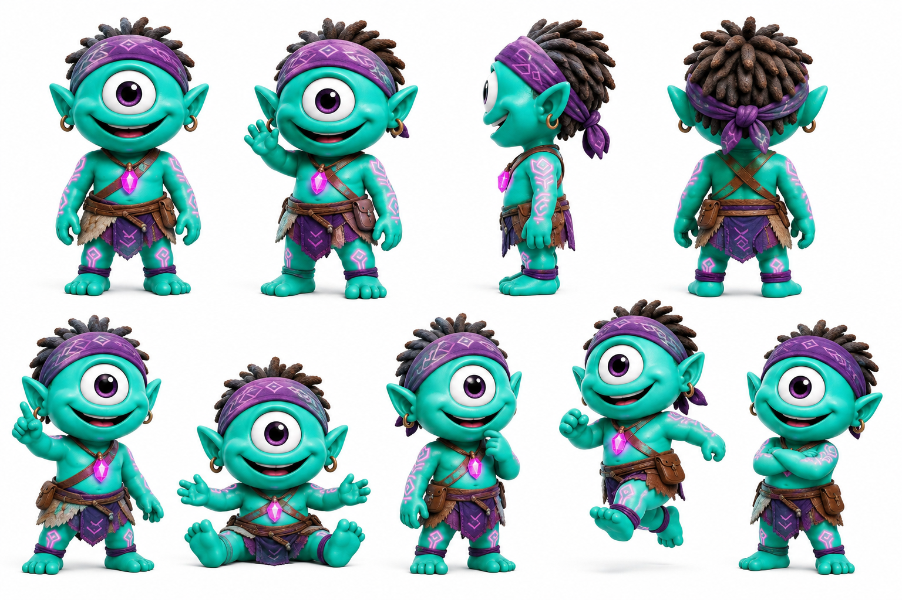

Jiggy protagonista
Chasqui irreverente, detonante de la quest. Bart Simpson con intuición moral afinada.
Más
Pitch: anti-héroe juguetón. Cae al templo olvidado por accidente y trae al clan la noticia de que la solución existe y vive arriba.
Personalidad: irreverente, accidente-prone, anti-héroe simpático. Oculta una intuición moral muy afinada — sabe distinguir un gesto verdadero de uno falso a kilómetros.
Frase: "¿Y si lo toco?"
Vínculos: mejor amigo de KZ y de Luz. Wiz valida sus hallazgos.